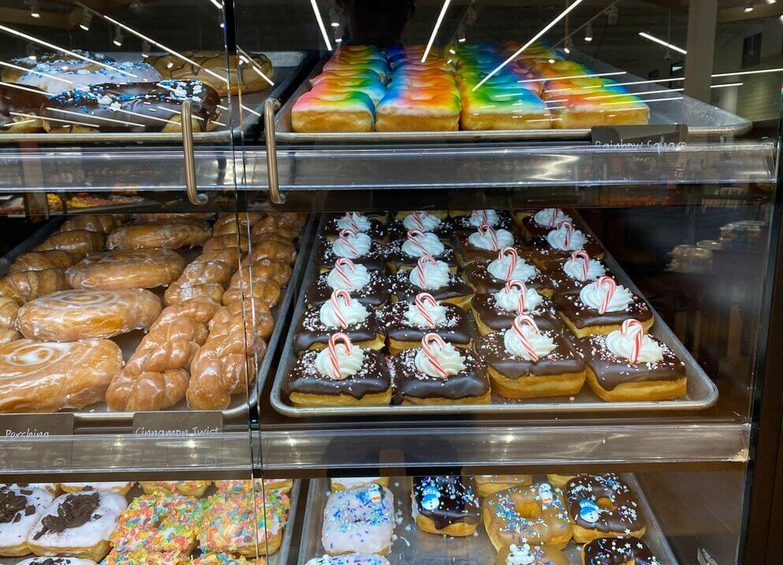

.jpg)
Decorating
Frosting
There are many different ways to frost a donut that help create an endless canvas of deliciousness. Here are some following picture ideas of how to frost donuts. All of these methods can be done in a commercial kitchen or at home.
Here is a video of how they can dip multiple donuts at once.
Flavors
Get creative! Find flavors that work well together and experiment. Regular flavors include maple, chocolate and vanilla. Try combinations like chocolate and peppermint, or adding apples and caramel.
Do you have a favorite ice cream, pie or other dessert? Try to create that same flavor in your donut. Fillings are a great way to add a delicious custard or try another filling you enjoy. Have fun and get messy!
2Inspiration
The internet is full of so many ideas. Some really fantastic inspiration for decorating donuts comes from decorated sugar cookies! Other inspirations can come from cultural celebrations, holidays and other national days.
Don’t forget you can use sprinkles for a special touch, plastic rings or other kinds of decorations to spice up your decorating. Have fun and enjoy the process. It won’t always be so pretty, but you get better the more you do and the more you experiment.
Get creative!
Have fun and get messy!
Being a donut artisan is so rewarding and so fun. If you love being creative and non-stop action, this is for you!
Don’t be afraid to try this at home either. Have fun decorating and sharing with friends and loved ones.